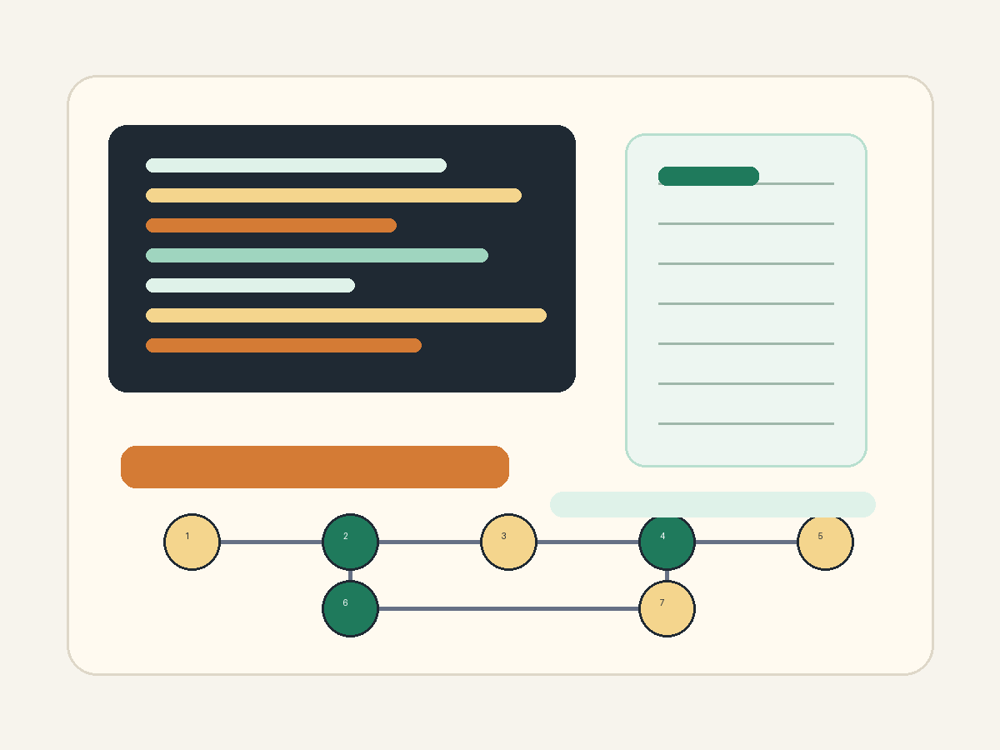

算法与数据结构
从排序、查找、递归和动态规划开始，逐步理解如何把实际问题转化为可计算的步骤。

About
我目前正在学习算法基础。这个主页尝试把课程学习、网页制作和 AI Agent 工作流结合起来的成果。
ustc计算数学在读
Direction
从排序、查找、递归和动态规划开始，逐步理解如何把实际问题转化为可计算的步骤。
学习如何让 AI Agent 阅读需求、规划任务、生成代码、检查结果，并在人的判断下持续修改。
把课程笔记、代码实践和复盘总结沉淀下来，让学习过程不只是完成作业，也能形成长期积累。
Records
完成首页结构、导航、博客入口和基础响应式布局，作为课程大作业的展示入口。
围绕 AI Agent 辅助学习和开发，整理从零开始搭建网页的过程、收获和反思。
计划使用 GitHub Pages 发布网页，并检查首页、博客链接和不同屏幕下的阅读体验。
Blog
这篇博客记录了目前的科研方向。
Contact